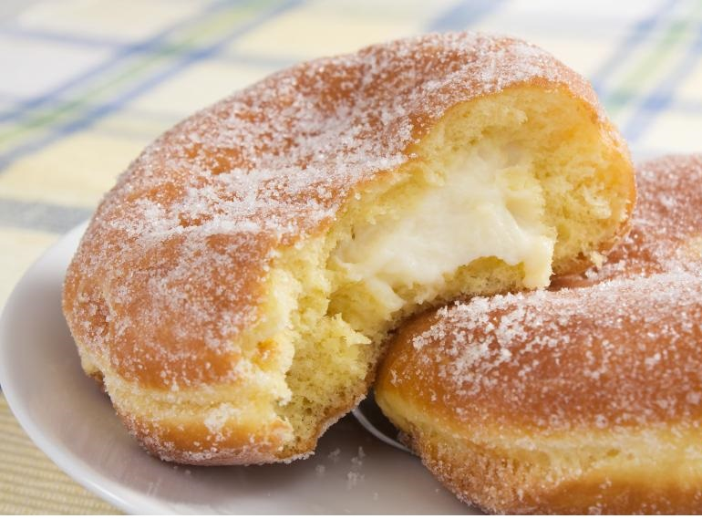
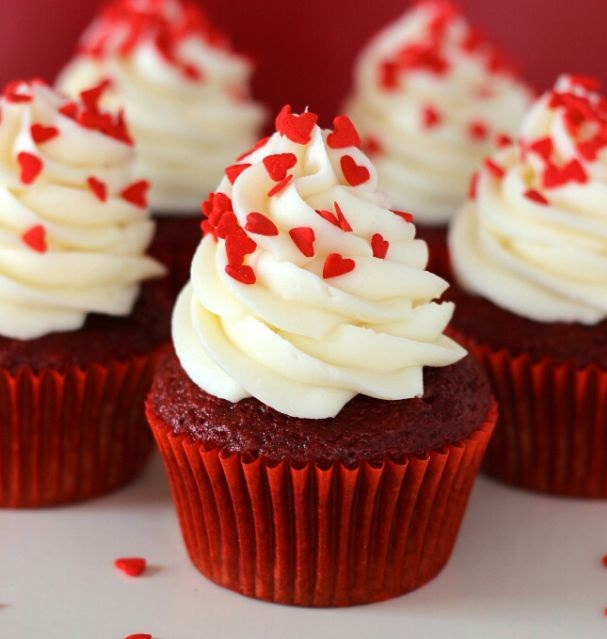

Te ha pasado que después de cocinar un platillo o un postre te sientes más relajado?
Bueno, pues no es casualidad. Cocinar es una excelente actividad para expresar emociones de manera creativa y cómo elemento para combatir la tristeza, la ansiedad o el estrés.Compartir sentimientos a través de la cocina es maravilloso, muchas veces se comunica lo que no se puede decir con palabras, ofreciendo un pedazo de nosotros mismos con una demostración de cariño. Es una acción llena de generosidad

Donas
S on una delicia culinaria muy popular en muchos lugares del mundo. Se trata de un bollo en forma de anillo o rosca, generalmente de masa dulce y esponjosa, que se fríe en aceite. Después de la fritura, las donas se suelen decorar, glasear o espolvorear con azúcar, canela, o diferentes coberturas dulces, convirtiéndolas en un postre delicioso y atractivo.

Ponques
Son un postre delicioso derivado de los bizcochos, Al igual que las tortas o pasteles, los ponques pueden ser decorados con glaseados, frutas, nueces, o simplemente espolvoreados con azúcar en polvo. Su versatilidad en cuanto a sabores y presentaciones los hace adecuados para ser disfrutados en distintas ocasiones, ya sea como postre, merienda o acompañados de café o té

Tortas
Las tortas son un tipo de pastel o dulce horneado que puede variar en tamaño, sabor, ingredientes y formas, dependiendo de la región y la tradición culinaria. pueden tener una variedad de sabores, como vainilla, chocolate, frutas, nueces o rellenos con cremas o mermeladas.